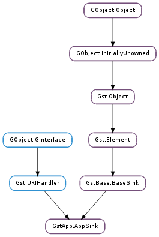

| get_caps() | |
| get_drop() | |
| get_emit_signals() | |
| get_max_buffers() | |
| is_eos() | |
| pull_preroll() | |
| pull_sample() | |
| set_caps(caps) | |
| set_drop(drop) | |
| set_emit_signals(emit) | |
| set_max_buffers(max) |
| Name | Type | Flags | Description |
|---|---|---|---|
| caps | Gst.Caps | r/w | The allowed caps for the sink pad |
| drop | bool | r/w | Drop old buffers when the buffer queue is filled |
| emit-signals | bool | r/w | Emit new-preroll and new-sample signals |
| eos | bool | r | Check if the sink is EOS or not started |
| max-buffers | int | r/w | The maximum number of buffers to queue internally (0 = unlimited) |
| Name | Parameters | Return | Description |
|---|---|---|---|
| eos | Signal that the end-of-stream has been reached. This signal is emitted from the steaming thread. | ||
| new-preroll | Gst.FlowReturn | Signal that a new preroll sample is available. This signal is emitted from the steaming thread and only when the “emit-signals” property is True. The new preroll sample can be retrieved with the “pull-preroll” action signal or GstApp.AppSink.pull_preroll () either from this signal callback or from any other thread. Note that this signal is only emitted when the “emit-signals” property is set to True, which it is not by default for performance reasons. | |
| new-sample | Gst.FlowReturn | Signal that a new sample is available. This signal is emitted from the steaming thread and only when the “emit-signals” property is True. The new sample can be retrieved with the “pull-sample” action signal or GstApp.AppSink.pull_sample () either from this signal callback or from any other thread. Note that this signal is only emitted when the “emit-signals” property is set to True, which it is not by default for performance reasons. | |
| pull-preroll | Gst.Sample | Get the last preroll sample in appsink. This was the sample that caused the appsink to preroll in the PAUSED state. This sample can be pulled many times and remains available to the application even after EOS. This function is typically used when dealing with a pipeline in the PAUSED state. Calling this function after doing a seek will give the sample right after the seek position. Note that the preroll sample will also be returned as the first sample when calling GstApp.AppSink.pull_sample () or the “pull-sample” action signal. If an EOS event was received before any buffers, this function returns None. Use GstApp.AppSink.is_eos () to check for the EOS condition. This function blocks until a preroll sample or EOS is received or the appsink element is set to the READY/NULL state. | |
| pull-sample | Gst.Sample | This function blocks until a sample or EOS becomes available or the appsink element is set to the READY/NULL state. This function will only return samples when the appsink is in the PLAYING state. All rendered samples will be put in a queue so that the application can pull samples at its own rate. Note that when the application does not pull samples fast enough, the queued samples could consume a lot of memory, especially when dealing with raw video frames. It’s possible to control the behaviour of the queue with the “drop” and “max-buffers” properties. If an EOS event was received before any buffers, this function returns None. Use GstApp.AppSink.is_eos () to check for the EOS condition. |
| Name | Type | Access |
|---|---|---|
| basesink | GstBase.BaseSink | r |
Bases: GstBase.BaseSink, Gst.URIHandler
Appsink is a sink plugin that supports many different methods for making the application get a handle on the GStreamer data in a pipeline. Unlike most GStreamer elements, Appsink provides external API functions.
appsink can be used by linking to the gstappsink.h header file to access the methods or by using the appsink action signals and properties.
The normal way of retrieving samples from appsink is by using the GstApp.AppSink.pull_sample () and GstApp.AppSink.pull_preroll () methods. These methods block until a sample becomes available in the sink or when the sink is shut down or reaches EOS.
Appsink will internally use a queue to collect buffers from the streaming thread. If the application is not pulling samples fast enough, this queue will consume a lot of memory over time. The “max-buffers” property can be used to limit the queue size. The “drop” property controls whether the streaming thread blocks or if older buffers are dropped when the maximum queue size is reached. Note that blocking the streaming thread can negatively affect real-time performance and should be avoided.
If a blocking behaviour is not desirable, setting the “emit-signals” property to True will make appsink emit the “new-sample” and “new-preroll” signals when a sample can be pulled without blocking.
The “caps” property on appsink can be used to control the formats that appsink can receive. This property can contain non-fixed caps, the format of the pulled samples can be obtained by getting the sample caps.
If one of the pull-preroll or pull-sample methods return None, the appsink is stopped or in the EOS state. You can check for the EOS state with the “eos” property or with the GstApp.AppSink.is_eos () method.
The eos signal can also be used to be informed when the EOS state is reached to avoid polling.
Last reviewed on 2008-12-17 (0.10.22)
| Returns: | the Gst.Caps accepted by the sink. gst_caps_unref() after usage. |
|---|---|
| Return type: | Gst.Caps |
Get the configured caps on appsink.
| Returns: | True if appsink is dropping old buffers when the queue is filled. |
|---|---|
| Return type: | bool |
Check if appsink will drop old buffers when the maximum amount of queued buffers is reached.
| Returns: | True if appsink is emiting the “new-preroll” and “new-sample” signals. |
|---|---|
| Return type: | bool |
Check if appsink will emit the “new-preroll” and “new-sample” signals.
| Returns: | The maximum amount of buffers that can be queued. |
|---|---|
| Return type: | int |
Get the maximum amount of buffers that can be queued in appsink.
| Returns: | True if no more samples can be pulled and the appsink is EOS. |
|---|---|
| Return type: | bool |
Check if appsink is EOS, which is when no more samples can be pulled because an EOS event was received.
This function also returns True when the appsink is not in the PAUSED or PLAYING state.
| Returns: | a Gst.Buffer or None when the appsink is stopped or EOS. |
|---|---|
| Return type: | Gst.Sample |
Get the last preroll sample in appsink. This was the sample that caused the appsink to preroll in the PAUSED state. This sample can be pulled many times and remains available to the application even after EOS.
This function is typically used when dealing with a pipeline in the PAUSED state. Calling this function after doing a seek will give the sample right after the seek position.
Note that the preroll sample will also be returned as the first sample when calling GstApp.AppSink.pull_sample ().
If an EOS event was received before any buffers, this function returns None. Use GstApp.AppSink.is_eos () to check for the EOS condition.
This function blocks until a preroll sample or EOS is received or the appsink element is set to the READY/NULL state.
| Returns: | a Gst.Buffer or None when the appsink is stopped or EOS. |
|---|---|
| Return type: | Gst.Sample |
This function blocks until a sample or EOS becomes available or the appsink element is set to the READY/NULL state.
This function will only return samples when the appsink is in the PLAYING state. All rendered buffers will be put in a queue so that the application can pull samples at its own rate. Note that when the application does not pull samples fast enough, the queued buffers could consume a lot of memory, especially when dealing with raw video frames.
If an EOS event was received before any buffers, this function returns None. Use GstApp.AppSink.is_eos () to check for the EOS condition.
| Parameters: | caps (Gst.Caps) – caps to set |
|---|
Set the capabilities on the appsink element. This function takes a copy of the caps structure. After calling this method, the sink will only accept caps that match caps. If caps is non-fixed, you must check the caps on the buffers to get the actual used caps.
| Parameters: | drop (bool) – the new state |
|---|
Instruct appsink to drop old buffers when the maximum amount of queued buffers is reached.